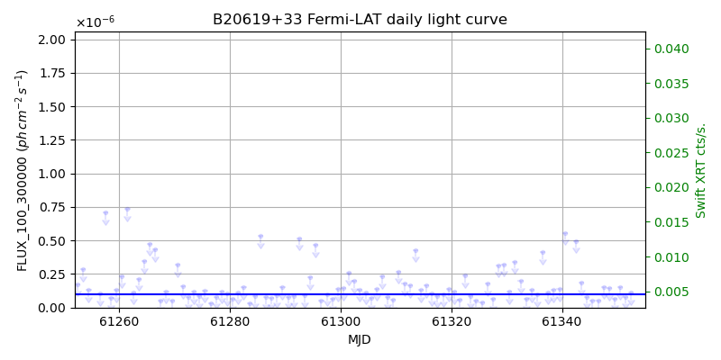
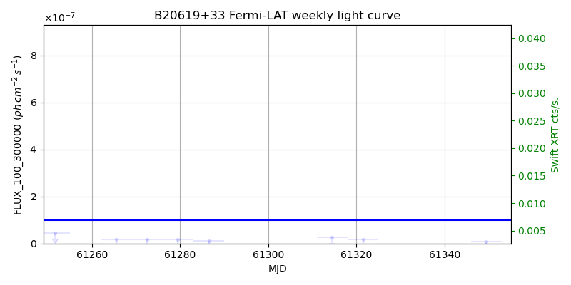
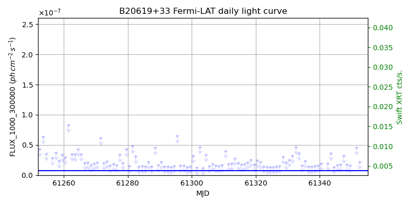
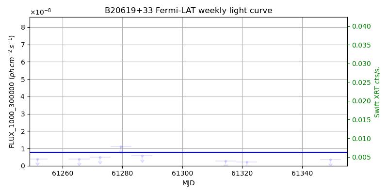

LAT Lightcurve site: https://fermi.gsfc.nasa.gov/ssc/data/access/lat/msl_lc/source/B2_0619p33
Swift site: https://www.swift.psu.edu/monitoring/source.php?source=B20619+33
NED: Query
Time of last update of this page: UT: 2026-11-13 16:17 (MJD: 61357.679)
| Property | Value |
|---|---|
| R.A. | 6:22:52.32 |
| Dec. | 33:26:09.6 |
| z | 1.062 |
| 3FGL SpectrumType | LogParabola |
| 3FGL PL Index | |
| 3FGL Flux_100_300000 | 9.92e-08 1 / (s cm2) |
| 3FGL Flux_1000_300000 | 7.63e-09 1 / (s cm2) |
| 3FGL Flux >200 GeV | 8.46e-12 1 / (s cm2) |
| 3FGL Extrap. Crab >200 GeV | 0.04 |
| 3FGL Flux After EBL Absorption >200GeV | 9.86e-14 1 / (s cm2) |
| 3FGL EBL Crab Fraction >200GeV | 0.00 |

| MJD | dMJD | Flux | dFlux | Frac3FGL | FracCrab>200GeV | EBLFracCrab>200GeV |
|---|---|---|---|---|---|---|
| 61348.50 | 0.50 | 1.45e-07 | 0.00e+00 | 0.00 | 0.00 | 0.00 |
| 61349.50 | 0.50 | 6.74e-08 | 0.00e+00 | 0.00 | 0.00 | 0.00 |
| 61350.50 | 0.50 | 1.53e-07 | 0.00e+00 | 0.00 | 0.00 | 0.00 |
| 61351.50 | 0.50 | 8.18e-08 | 0.00e+00 | 0.00 | 0.00 | 0.00 |
| 61352.50 | 0.50 | 1.11e-07 | 0.00e+00 | 0.00 | 0.00 | 0.00 |

| MJD | dMJD | Flux | dFlux | Frac3FGL | FracCrab>200GeV | EBLFracCrab>200GeV |
|---|---|---|---|---|---|---|
| 61279.50 | 3.50 | 1.85e-08 | 0.00e+00 | 0.00 | 0.00 | 0.00 |
| 61286.50 | 3.50 | 1.26e-08 | 0.00e+00 | 0.00 | 0.00 | 0.00 |
| 61314.50 | 3.50 | 2.68e-08 | 0.00e+00 | 0.00 | 0.00 | 0.00 |
| 61321.50 | 3.50 | 1.64e-08 | 0.00e+00 | 0.00 | 0.00 | 0.00 |
| 61349.50 | 3.50 | 8.44e-09 | 0.00e+00 | 0.00 | 0.00 | 0.00 |

| MJD | dMJD | Flux | dFlux | Frac3FGL | FracCrab>200GeV | EBLFracCrab>200GeV |
|---|---|---|---|---|---|---|
| 61348.50 | 0.50 | 1.74e-08 | 0.00e+00 | 0.00 | 0.00 | 0.00 |
| 61349.50 | 0.50 | 1.59e-08 | 0.00e+00 | 0.00 | 0.00 | 0.00 |
| 61350.50 | 0.50 | -1.00e+00 | 0.00e+00 | 0.00 | 0.00 | 0.00 |
| 61351.50 | 0.50 | 4.53e-08 | 0.00e+00 | 0.00 | 0.00 | 0.00 |
| 61352.50 | 0.50 | 2.16e-08 | 0.00e+00 | 0.00 | 0.00 | 0.00 |

| MJD | dMJD | Flux | dFlux | Frac3FGL | FracCrab>200GeV | EBLFracCrab>200GeV |
|---|---|---|---|---|---|---|
| 61279.50 | 3.50 | 1.11e-08 | 0.00e+00 | 0.00 | 0.00 | 0.00 |
| 61286.50 | 3.50 | 5.75e-09 | 0.00e+00 | 0.00 | 0.00 | 0.00 |
| 61314.50 | 3.50 | 2.85e-09 | 0.00e+00 | 0.00 | 0.00 | 0.00 |
| 61321.50 | 3.50 | 2.23e-09 | 0.00e+00 | 0.00 | 0.00 | 0.00 |
| 61349.50 | 3.50 | 3.46e-09 | 0.00e+00 | 0.00 | 0.00 | 0.00 |
--------------------------------------------------------- Using user-supplied coords: 6:22:52.32 33:26:09.6 2000 --------------------------------------------------------- FLWO UT night of: 2026-11-14 Local Sid. @ Midnight: 03:09 Sunset (-15.0) (local, UT): 18:35 01:35 Sunrise (-15.0) (local, UT): 05:42 12:42 Moonrise (local, UT): Moonset (local, UT): 20:50 03:50 Moon phase: 0.22 --------------------------------------------------------- AzTime LSID UT Obj_el Obj_az Mn_el Mn_az Sep. --------------------------------------------------------- 18:35 21:44 01:35 -9.7 40.3 20.1 218.2 169.5 19:05 22:14 02:05 -5.0 44.9 16.0 223.7 169.3 19:35 22:44 02:35 -0.1 49.1 11.6 228.6 169.1 20:05 23:14 03:05 4.4 52.9 6.9 233.2 168.9 20:35 23:44 03:35 9.6 56.4 2.0 237.3 168.7 21:05 00:14 04:05 15.0 59.6 -2.2 241.2 168.5 21:35 00:44 04:35 20.6 62.6 -9.0 244.8 168.3 22:05 01:14 05:05 26.3 65.3 -14.6 248.2 168.1 22:35 01:44 05:35 32.2 67.9 -20.4 251.4 167.8 23:05 02:14 06:05 38.2 70.2 -26.2 254.5 167.5 23:35 02:44 06:35 44.2 72.4 -32.1 257.5 167.3 00:05 03:14 07:05 50.3 74.3 -38.1 260.6 167.0 00:35 03:45 07:35 56.5 76.1 -44.2 263.8 166.7 01:05 04:15 08:05 62.8 77.6 -50.2 267.1 166.4 01:35 04:45 08:35 69.0 78.5 -56.3 270.9 166.1 02:05 05:15 09:05 75.3 78.5 -62.4 275.3 165.9 02:35 05:45 09:35 81.5 75.5 -68.4 281.1 165.6 03:05 06:15 10:05 87.4 47.5 -74.2 289.9 165.3 03:35 06:45 10:35 85.3 293.1 -79.6 306.2 164.9 04:05 07:15 11:05 79.1 282.6 -83.2 343.5 164.6 04:35 07:45 11:35 72.9 281.3 -82.1 35.1 164.3 05:05 08:15 12:05 66.6 281.8 -77.4 61.2 164.0 05:35 08:45 12:35 60.4 283.0 -71.8 73.4 163.7 05:42 08:52 12:42 59.0 283.3 -70.5 75.2 163.7 --------------------------------------------------------- Dark hours >55 deg.: 5.23 srcstart (UT): 2026-11-14 07:27 srcend (UT): 2026-11-14 12:41